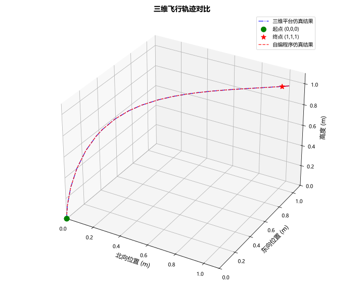
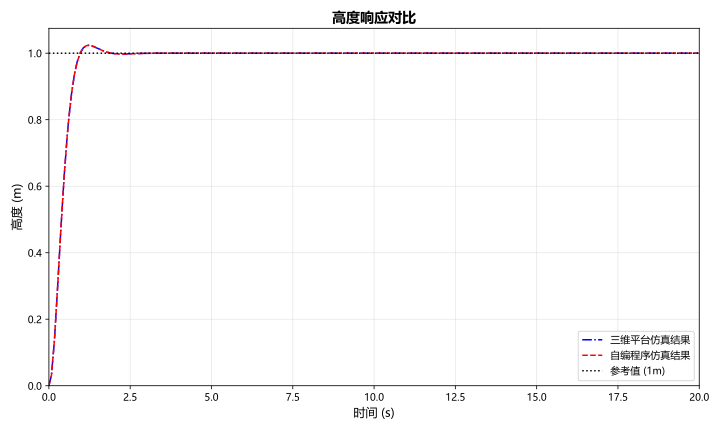
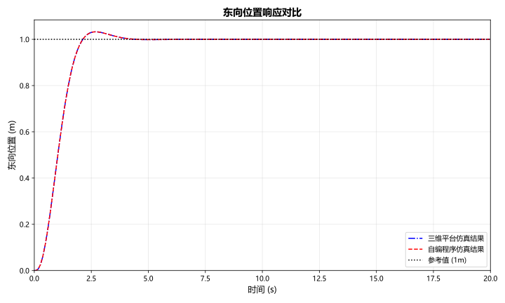
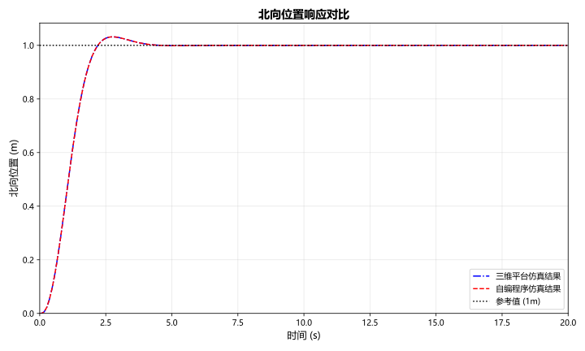

四旋翼无人机仿真与控制
本文直接搬运了我的有关课程报告，如有用词生硬等问题请多见谅。
让我们开始吧。
引言
四旋翼无人机具有垂直起降、悬停、机动性强等优点，在航拍、测绘、救援等领域得到广泛应用。其控制系统设计通常需要解决欠驱动、强耦合、非线性等挑战。本课程报告以四旋翼无人机为对象，实现从点$(0,0,0)$到点$(1,1,-1)$的定点飞行，同时偏航角从$0$转到$\pi/6$。基于微分先行PD控制和内外环结构，设计控制器并通过仿真验证。
四旋翼无人机建模
坐标系定义
为了描述无人机的运动，引入三个右手直角坐标系：
- 惯性系$\mathcal{F}_i$：原点在地面某点，$x$轴指北，$y$轴指东，$z$轴指向地心。
- 机体系$\mathcal{F}_v$：原点在质心，各轴与惯性系平行。
- 本体系$\mathcal{F}_b$：原点在质心，$x$轴指向前方，$y$轴指向右侧，$z$轴指向下方。
无人机的位置在惯性系下表示为$\bf{p}=[p_N,p_E,p_D]^{\mathrm{T}}$，速度$\bf{v}=[v_N,v_E,v_D]^{\mathrm{T}}$。姿态用欧拉角$(\phi,\theta,\psi)$（滚转、俯仰、偏航）描述，转动顺序为3-2-1（即先偏航，再俯仰，最后滚转）。从惯性系到本体系的旋转矩阵为：
为了讨论的方便，定义基本旋转矩阵如下：
绕 $z$ 轴旋转 $\psi$（偏航角）：
绕 $y$ 轴旋转 $\theta$（俯仰角）：
绕 $x$ 轴旋转 $\phi$（滚转角）：
因此，从惯性系到本体系的完整旋转矩阵为：
运动学与动力学方程
平动运动方程
平动运动学方程为位置对时间的导数等于速度：
平动动力学由牛顿第二定律在惯性系下给出：
其中$\bf{f}_g=[0,0,mg]^{\mathrm{T}}$为重力，$\bf{f}_u^i$为螺旋桨总升力在惯性系下的表示。升力在本体系下为$\bf{f}_u^b=[0,0,-F]^{\mathrm{T}}$，转换到惯性系得$\bf{f}_u^i=\bf{R}_{i\leftarrow b}\bf{f}_u^b = \bf{R}_{b\leftarrow i}^{\mathrm{T}}\bf{f}_u^b$。代入展开可得：
姿态运动方程
姿态运动学描述了欧拉角速率与本体系角速度$\bf{\omega}=[\omega_x,\omega_y,\omega_z]^{\mathrm{T}}$的关系：
姿态动力学基于角动量定理推导，在假设无人机为对称刚体（$I_{xy}=I_{xz}=I_{yz}=0$）时，有：
其中$\bf{\tau}=[\tau_x,\tau_y,\tau_z]^{\mathrm{T}}$为三轴力矩。
模型简化与线性化
平衡点
选择悬停状态为平衡点：
对位置$p_N,p_E,p_D$和偏航角$\psi$在平衡点处无约束，通常取为零或期望值。
小偏差线性化
在平衡点附近对非线性模型进行泰勒展开，忽略高阶项，得到线性化模型。各通道解耦为二阶积分环节：
- 高度通道：$\ddot{h} = \frac{1}{m}u_F$，其中$h=-p_D$，$u_F=F-F_0$;
- 滚转角通道：$\ddot{\phi} = \frac{1}{I_{xx}}\tau_x$;
- 俯仰角通道：$\ddot{\theta} = \frac{1}{I_{yy}}\tau_y$;
- 偏航角通道：$\ddot{\psi} = \frac{1}{I_{zz}}\tau_z$;
- 水平位置通道（小角度近似且$\psi=0$时）：$\ddot{p}_N = -g\theta$，$\ddot{p}_E = g\phi$。
当偏航角$\psi$不为零时，水平位置与姿态的耦合关系需要重新推导。由式(\ref{eq:motion})给出的平动动力学方程，在小角度假设下（$\phi \approx 0$，$\theta \approx 0$，$\cos\phi \approx 1$，$\cos\theta \approx 1$，$\sin\phi \approx \phi$，$\sin\theta \approx \theta$），并忽略高阶小量，可得：
在平衡点$F_0 = mg$附近，令$F \approx mg$，且考虑$\ddot{p}_N = \dot{v}_N$，$\ddot{p}_E = \dot{v}_E$，则：
这是一个时变（当$\psi$变化时）或非线性关系，表现为以下特点：
- 当$\psi = 0$时，式(\ref{eq:coupling})退化为$\ddot{p}_N = -g\theta$，$\ddot{p}_E = g\phi$，即俯仰角控制北向位置，滚转角控制东向位置，实现解耦；
- 当$\psi \neq 0$时，北向和东向加速度均由$\theta$和$\phi$共同决定，存在强耦合；
- 矩阵$\bf{M}(\psi) = \begin{bmatrix} \cos\psi & \sin\psi \\ \sin\psi & -\cos\psi \end{bmatrix}$是可逆的，且$\det(\bf{M}(\psi)) = -1 \neq 0$，这为反馈线性化提供了条件。
为了设计线性控制器，采用反馈线性化方法处理上述耦合关系。引入虚拟控制量$\bf{a} = [a_N, a_E]^{\mathrm{T}}$，令：
则实际姿态角指令可通过求解式(13)获得：
由于$\bf{M}(\psi)$的逆矩阵为：
即$\bf{M}^{-1}(\psi) = \bf{M}(\psi)$（该矩阵满足$\bf{M}^2 = \bf{I}$）。因此：
其中$\theta_d$和$\phi_d$作为内环的期望姿态角输入。通过式(17)，将原非线性耦合系统转化为两个独立的二阶积分环节：
至此，可针对虚拟控制量$a_N$和$a_E$分别设计线性控制器（如PD控制器），实现对水平位置的解耦控制。
控制器设计
采用内外环控制结构：内环控制高度和三个姿态角，外环控制水平位置并生成内环的期望姿态角。所有通道均使用微分先行PD控制器，以避免设定值突变引起的微分冲击。
微分先行PD控制
微分先行PD控制器的控制律为：
其中$e(t)=r(t)-y(t)$。对于二阶积分环节$\ddot{y}=b u$，采用微分先行PD后，闭环传递函数为：
无零点，避免了超调。通过极点配置，令闭环特征多项式与标准二阶系统$s^2+2\zeta\omega_n s+\omega_n^2$相等，可得：
故控制器可根据指标要求要求的$\zeta$和$\omega_n$任意设计。
内环控制器设计
- 高度通道：$b_h = 1/m$，控制输入$u_F = F - mg$，输出$h$;
- 滚转通道：$b_\phi = 1/I_{xx}$，控制输入$\tau_x$，输出$\phi$;
- 俯仰通道：$b_\theta = 1/I_{yy}$，控制输入$\tau_y$，输出$\theta$;
- 偏航通道：$b_\psi = 1/I_{zz}$，控制输入$\tau_z$，输出$\psi$。
实际仿真中无人机参数为：质量$m = 2.69\,\text{kg}$，重力加速度$g = 9.81\,\text{m/s}^2$，转动惯量$I_{xx} = I_{yy} = 0.015\,\text{kg·m}^2$，$I_{zz} = 0.0245\,\text{kg·m}^2$。
根据性能指标要求，各通道控制器参数设计如下：
高度通道
取超调量$M_p \leq 3\%$，由$M_p = e^{-\pi\zeta/\sqrt{1-\zeta^2}}$解得阻尼比：
取调节时间$t_s = 1.0\,\text{s}$（5\%误差带），由$t_s \approx 3/(\zeta_H\omega_n)$得：
则PD控制器参数为：
偏航通道
取超调量$M_p \leq 3\%$，阻尼比$\zeta_{\psi} \approx 0.745$，调节时间$t_s = 0.8\,\text{s}$，则：
滚转与俯仰通道（内环）
取超调量$M_p \leq 4\%$，阻尼比：
取调节时间$t_s = 0.6\,\text{s}$，则：
滚转通道PD参数：
俯仰通道PD参数：
根据上述计算，内环PD控制器参数汇总如表所示。
| 通道 | $b$ | $\zeta$ | $\omega_n\,(\text{rad/s})$ | $k_p$ | $k_D$ |
|---|---|---|---|---|---|
| 高度 | $1/m$ | 0.745 | 4.03 | 43.64 | 16.14 |
| 滚转 | $1/I_{xx}$ | 0.716 | 6.99 | 0.732 | 0.150 |
| 俯仰 | $1/I_{yy}$ | 0.716 | 6.99 | 0.732 | 0.150 |
| 偏航 | $1/I_{zz}$ | 0.745 | 5.03 | 0.620 | 0.184 |
内环控制律为：
外环控制器设计与反馈线性化
外环控制水平位置$(p_N,p_E)$，输出为期望滚转角$\phi_d$和期望俯仰角$\theta_d$，作为内环的输入。由式(17)知，实际加速度与姿态的关系为：
由于$\bf{M}(\psi)$可逆，且$\det(\bf{M})=-1$，可设计虚拟控制量$\bf{a}=[a_N,a_E]^{\mathrm{T}}$，令
则实际姿态指令为：
虚拟控制量$a_N,a_E$采用微分先行PD控制器设计，将水平位置通道视为两个独立的二阶积分环节（传递函数$g/s^2$）。取外环期望阻尼比$\zeta_o=0.716$，调节时间$t_{s}=3$ s（响应慢于内环。根据文献，内环带宽最好达到外环的五倍以上），则外环PD参数为：
代入参数计算得$k_{pN}=k_{pE}=0.199$，$k_{DN}=k_{DE}=0.204$。易知外环控制律：
再将$a_N,a_E$代入式(14)得到$\theta_d,\phi_d$。
仿真结果与分析
仿真条件
| 软件/库 | 版本 |
|---|---|
| Python | 3.10.20 |
| NumPy | 2.2.6 |
| Matplotlib | 3.10.8 |
| Pandas | 2.3.3 |
自编程序环境见表2。在程序中实现了上述非线性模型和控制器。设定目标位置$(p_N,p_E,h)=(1,1,1)$（其中$h=-p_D=1$），目标偏航角$\psi_d=30^\circ=\pi/6$ rad。初始状态全部为零。仿真时间20秒，步长0.01秒。无人机参数：$m = 2.69\,\text{kg}$，$I_{xx} = I_{yy} = 0.015\,\text{kg}\cdot\text{m}^2$，$I_{zz} = 0.0245\,\text{kg}\cdot\text{m}^2$，重力加速度$g = 9.81\,\text{m}/\text{s}^2$。
仿真结果
此处所谓”对比”为与课程提供仿真平台进行的对比
下面图片展示了无人机三维轨迹，对比了高度、偏航角响应，图对比了位置响应曲线，可以看出，自编程序结果与虚拟平台导出的CSV数据基本重合，微小差异源于虚拟平台可能包含未建模动态或离散化方式不同。上升时间约0.4秒，调节时间约2.5秒，超调量小于3\%，稳态误差为零，偏航角精确跟踪30°，满足要求。





参考文献
- [1] 王广雄, 何朕. 控制系统设计 [M]. 哈尔滨: 哈尔滨工业大学出版社, 2022.